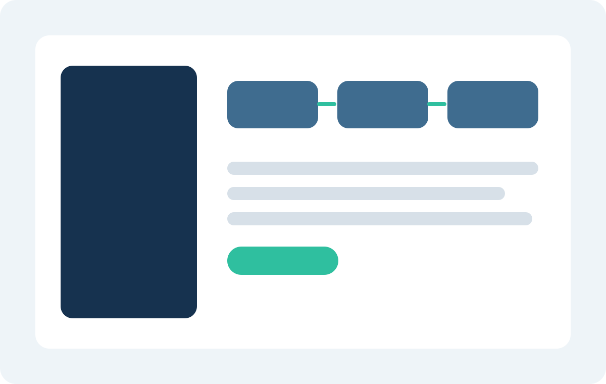

01
業務可視化・改善構想策定
ヒアリング、現場観察、運用資料確認を通じて業務フローと工数を見える化し、経営層が判断しやすい優先度マップを作成します。
- 業務フロー図、論点整理、改善優先順位表を作成
- 属人業務、重複処理、承認停滞の要因を特定
- 短期施策と中期施策を分けて提案
Services
構想だけで終わる支援ではなく、役割分担、手順、判断基準、運用会議体まで整え、現場が動く状態をつくります。

Service Lines
01
ヒアリング、現場観察、運用資料確認を通じて業務フローと工数を見える化し、経営層が判断しやすい優先度マップを作成します。
02
受発注、請求、マスタ更新、問い合わせ一次対応など、継続運用が必要な業務を対象に標準手順と責任分界を整備します。
03
ワークフロー、SFA、在庫連携、問い合わせ管理など、導入済みツールが使われない状態を改善し、現場定着に必要なルールを整備します。
Workflow
現状課題、制約条件、繁忙期を確認し、先に見るべき業務範囲を決めます。
実務担当者ヒアリングと資料確認をもとに、滞留箇所と判断依存点を把握します。
標準フロー、例外処理、責任分界、必要ツール、導入スケジュールを整理します。
教育、会議運営、KPI確認を通じて、新運用が定着するまで支援します。
Support Scope
| プラン | 主な内容 | 期間目安 |
|---|---|---|
| 診断パック | 業務可視化、課題整理、改善優先度提示 | 4週間 |
| 設計伴走 | 改善設計、BPO検討、運用ルール整備 | 2〜3か月 |
| 定着支援 | 教育、KPI運用、月次レビュー | 3〜6か月 |